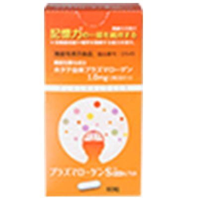

プラズマローゲンS
医療機関導入 プラズマローゲンサプリメント部門で3年連続1位、累計出荷数45万箱、全国300以上の医療機関で導入されている、プラズマローゲンS。
本商品はプラズマローゲン開発者である藤野武彦医師が臨床試験代表を務める一般社団法人プラズマローゲン研究会の認証品ということで、かなり信頼のおける商品なんです。
プラズマローゲンSだけの魅力に迫ります。
エビデンスに裏付けされたプラズマローゲンを採用
プラズマローゲンSは世界で初めてプラズマローゲンの抽出・製造を手掛けた九州大学名誉教授の藤野武彦先生が代表を務める研究機関、「一般社団法人プラズマローゲン研究会」認証商品です。
世界初の新技術によりホタテ（国産）から抽出したプラズマローゲンを1,000㎍配合。
プラズマローゲンはホタテ以外の素材からも抽出可能ですが、プラズマローゲンSでは、あえて人にもっとも馴染みやすいホタテを素材として選んでいます。
本サプリで使用しているものと同じプラズマローゲンを使用した医薬品レベルの大規模臨床試験の論文が認められ、世界的医学誌「Ebio-Medecine」に掲載されるなど、本サプリで使用しているものと同じプラズマローゲンを使用した医薬品レベルの大規模臨床試験の論文が認められ、世界的医学誌「Ebio-Medecine」に掲載されるなど、
プラズマローゲンSには世界が注目する成分が豊富に含まれているのです。
医療機関での高い採用と評価がある
プラズマローゲンSはエビデンスに富んでいるだけではなく、製造技術においても医薬品と同様のレベルにあります。
プラズマローゲン製造会社の中では断トツである精製度75％以上の業界最高純度（多段階高純度抽出法／特許第6349532号）の製造により、世界的医学誌に認められる結果を出しているのみならず、
特許取得済みの粉末化保護製法（特許第6761924号）によりプラズマローゲンの安定化を叶え、安心して長く使えるような商品に。
製造は医薬品製造と同水準の国内GMP認定工場で行われているため、品質・成分クオリティともに医薬品に劣りません。
その証拠として全国300以上の医療機関で導入され、医療機関導入数NO1のプラズマローゲンサプリとなっています。
公式サイトが最もお得！
| １位 | ２位 | ３位 | ４位 |
|---|---|---|---|
| 公式 | amazon | 楽天 | Yahoo! |
| 5,400円 | 10,800円 | 10,800円 | 10,800円 |
プラズマローゲンSの口コミ
大満足の口コミ
-
45歳 主婦 Nさん
効果がスゴイ
物忘れがひどく、些細なことですぐ激昂する父に試しに購入し1ヶ月が経ちました。
本人は特に自覚はないようですが、家族が気付いた点としては、
・ほとんどキレることがなくなった（人並みに機嫌が悪いときや怒ることはあるものの穏やかになった）
・日にちや曜日など1日に何度も聞いてきていたのが、ほとんどなくなった
・直前の出来事など全く覚えていなかったのが、覚えていたり、忘れていてもこちらが話すと思い出す
などです。
これだけ効果が出ていてビックリしています。
今後もリピートします。
-
32歳 会社員 Jさん
プレゼントにしても喜ばれます
友人の母が認知症ということで使用しはじめました。
劇的な変化とはいきませんが、気分のムラが減って怒りっぽさがなくなってきたとのこと。
また快眠が得られるようになり、穏やかさを取り戻したとのことです。
-
52歳 主婦 Lさん
薬の量が減ってきました
いい感じです
母が飲み始めて3ヶ月ぐらいたちました。
今まで飲んでいた薬も少し減りよくなったように思います。
このまま今よりも少しでもよくなれば…。期待しています。
イマイチの口コミ
-
45歳 会社員 Rさん
値段が高いです
今月で服用3ヶ月目に入り本人の機嫌が安定してきたように思います。
ただ割と高額なので、このまま続けるか考えてしまいますね。
-
56歳 会社員 Gさん
認知症がかなり進行していると難しいのかも
4か月目の購入です。
母がアルツハイマーなので少しでも脳内のスッキリ感が得られればと思っておりました。
正直まだよくわかりません。
病気の進行はあるので仕方がない事なのかと思っております。
お値段が高価なので期待大でしたが中々難しいようです。